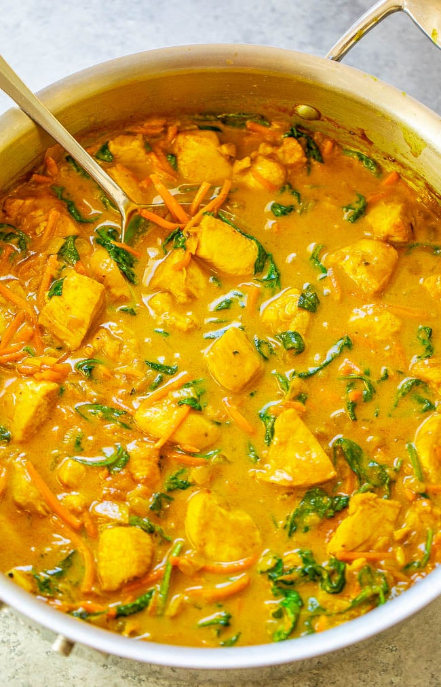

Yellow Thai Curry

Description
Better-than-takeout yellow curry is EASY and ready in 25 minutes!!
Healthy comfort food with the PERFECT amount of heat and lots of
textures and flavors in every bite!
Ingredients
- 3 tablespoons olive oil (coconut oil may be substituted)
- 1 medium/large sweet Vidalia or yellow onion, diced small
- 1.25 pounds boneless skinless chicken breast, diced into bite-sized pieces
- 3 cloves garlic, finely minced or pressed
- 2 to 3 teaspoons ground turmeric
- 2 teaspoons ground ginger or 1 tablespoon fresh ginger, finely chopped
- 2 teaspoons ground coriander
- 2 to 4 tablespoons Mekhala Organic Yellow Curry Paste, or as desired
- one 13.5-ounce can coconut milk (use full-fat for a richer/thicker result but lite may be substituted)
- 1 1/2 cups chopped carrots
- 1/2 teaspoon freshly ground black pepper, or to taste
- 1 to 2 tablespoons lime juice, optional but recommended
- 1/4 to 1/3 cup finely chopped basil
- 1 to 4 tablespoons light brown sugar, packed; optional and to taste
- fish sauce, optional and to taste
- rice (jasmine or basmati) or naan, optional for serving
Instructions
- To a large skillet, add the oil, onion, and sauté over medium-high heat until the onion begins to soften about 5 minutes; stir intermittently.
- Add the chicken and cook for about 5 minutes, or until chicken is done; flip and stir often to ensure even cooking.
- Add the garlic, turmeric, ginger, coriander, and cook for about 1 minute, or until fragrant; stir frequently.
- Add the curry paste, coconut milk, carrots, and stir to combine. Reduce the heat to medium, and allow mixture to gently boil for about 5 minutes, or until liquid volume has reduced as much as desired and thickens slightly.
- Add the spinach, pepper, and stir until the spinach has wilted.
- Taste the curry and add the optional but recommended lime juice (brightens the flavor of the dish), cilantro, optional light brown sugar (balances the heat), optional salt (I did not add any because the curry paste has salt in it), and add extra of any of the spices already used or more curry paste, if desired and to taste.